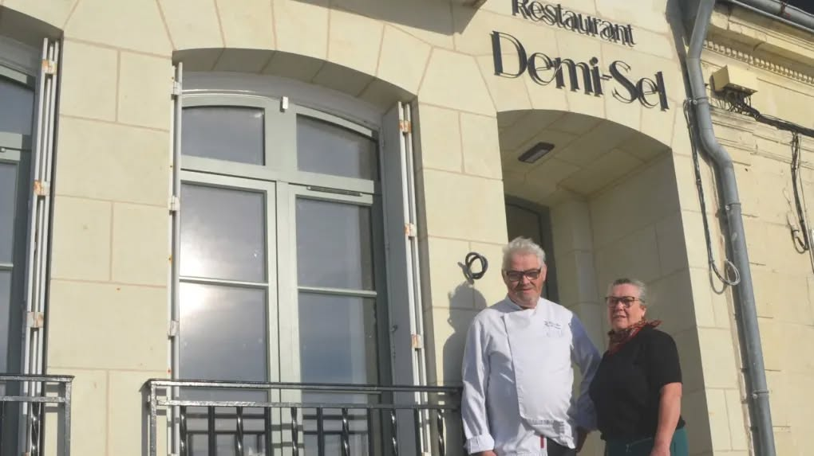

Notre Histoire

Primé au Gault et Millau, Christian Huet et sa femme Catherine s'installent en bord de Loire pour proposer une expérience culinaire locale et de qualité dans une ambiance intimiste. Originaires de Lamballe en Côte d'Armor, leur ancien restaurant La Cuisinerie était déjà reconnu pour ses mets de qualité. Leur envie de renouveau les a conduits jusqu'au village de La Chapelle-sur-Loire, dans une maison réhabilitée en restaurant gastronomique.